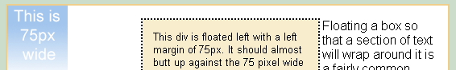
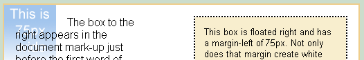
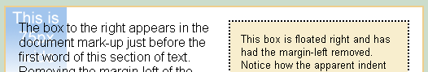
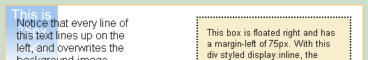
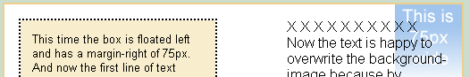
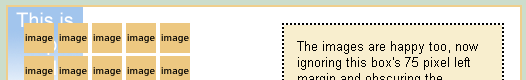

Return to Explorer Exposed
Return to Guest Demos
Next Explorer demo
Internet Explorer's problems rendering floats have been thoroughly analyzed, thanks in large part to Big John's efforts characterizing and publicizing them. We do still stumble onto undocumented oddities, though, and this demo presents one that hasn't been isolated yet—or we haven't heard about it if it has—and as a delightful by-product, suggests a simpler work-around (or maybe a hack) than we have been using for a bothersome rendering issue that's been around a while.
The bug demonstrated here causes in-line elements (images, text) adjacent to a floated div to appear to be indented from their expected location. The indentation is caused by IE6's weird handling of margins on floated elements. The happy by-product is a cleaner way to defeat the doubled-margin bug.
(Note: If you're looking at this in some browser other than Internet Explorer 6 on Windows, you're likely to wonder what the heck I'm talking about. All other browsers I have tested render the examples below properly and ignore the work-arounds—you have to use IE6 to really see what's going on, but I've included screenshots in case you just can't bring yourself to open IE)
Most of the CSS sits in a style block in the header of this page, but where I alter the styles to demonstrate the bug I've put the changes in-line so they'll be easy to find, and there are obvious comments in the source at the beginning of each example to make it even easier.
The relevant style declarations in the header are:
body{
font-size: 100%;
background-color: #ccddcc;
color: #000;
font-family: arial, helvetica, geneva, sans-serif;
margin: 0 15%;
}
.box{
clear: both;
width: 80%;
background: #fff url(images/75pxWide.png) no-repeat;
color: #000;
padding: 1em;
border: 2px solid #EFCE8C;
}
.sidebar{
float: right;
width: 15em;
font-size: 80%;
border: 2px dotted #000;
padding: 1em;
margin-left: 75px;
background-color: #f8eece;
color: #000;
}
The in-line styles used in each demo are documented below those demos.
Each example uses the same basic mark-up:
<div class="box"> <div class="sidebar"> a floated box with some content </div> some content </div>
Changes in mark-up will also be documented when they're used.
Not all of us can visualize a 75 pixel width, or know when we're looking at one, so to help out I've included a blue, 75-pixel-wide image in all of the examples. It's easy to spot because it's blue and says "This is 75 px wide." In all cases this image is applied as a background to the div holding the example and so takes up no space. It's there just to make it easier to see when a false margin is being applied.
First a review—the infamous IE6 margin-doubling bug could be one of the most pervasive problems ever to come out of the IE browser. When an element with a left-margin is floated left, IE6 will double the left margin of the floated element. (See a full treatment of the double-margin bug.) Here's a simple example:
Mark-up looks like this—
<div class="box"> <div class="sidebar" style="float: left">content </div> content </div>
...and here's a screen shot (IE6/WinXP):

The standard work around for the bug is to wrap an additional div around the floated div, apply the float to the wrapper and remove the float on the interior div, like so—
<div class="box">
<div style="float: left>
<div class="sidebar" style="float: none">content
</div>
</div>
content
</div>
Now the floated element has no margin, and the element with the margin isn't floated, with this result—
Screen Shot:
Which is what we would see without the wrapper div except for the bug, and what we do see in other browsers.
That double-margin effect is plenty peculiar itself, but under some other conditions IE6 gets even weirder, applying the margin of a floated element, in full, at two different places on the page. Look at the following example:
Screen shot:

You can see that he first line of the text is indented 75 pixels right. That 75 pixels comes from the 75 pixel left-margin of the sidebar div. I'll prove it to you.
If I change the mark-up to this—
<div class="box"> <div class="sidebar" style="margin-left: 0">content </div> content </div>
—removing the offending 75 pixel margin, IE delivers this:
Screen shot:

Miraculous! No indent. And just to see if the bug is symmetrical, we can swap the direction of the floats:
<div class="box" style="background-position: top right">
<div class="sidebar" style="float: left; margin-right: 75px;
margin-left: 0;">content
</div>
content
</div>
Screen shot:
And one more time, with a different kind of in-line element getting the fake indent, in this case a string of images:
Screen shot:

Well, there's nothing scientific going on here—this is a simple case of an IE6 rendering error. If you look at this page in a standards-compliant browser (yes, I know they're recommendations, not standards) none of the margins are borked—not on the examples where IE6 messes them up, and not on the examples where work-arounds are applied.
It's important to notice that IE6 applies this "indentation" only to in-line elements. If the text in the examples were surrounded by <p> tags, or <div> tags, which is much more common than having bare text, the IE bug would not show up.
The work around for this bug is preposterously simple, counter-intuitive and utterly in violation of the W3C recommendations—simply change the style of the floated element to "display: inline" and the problem disappears.
So do this—
<div class="box"> <div class="sidebar" style="display: inline">content </div> content </div>
and get this—
Screen shot:

and this—
Screen shot:

and this—
Screen shot:

The W3C specifications are very clear on the subject of the display function relative to floats:
9.5.1 Positioning the float: the 'float' property
"This property specifies whether a box should float to the left, right, or not at all. It may be set for elements that generate boxes that are not absolutely positioned. The values of this property have the following meanings:
According to the highlighted section of the spec, changing the display type, unless you change it to "none", should have no effect. Lucky for us IE ignored this part of the spec, allowing a simple, relatively harmless fix for their rendering bug.
Changing the display property of the floated element to display: inline is a clean, simple way to fix fake indentation, but as an added treat, the same fix works for the double margin bug.
Here's a copy of Example 1 above demonstrating the double-margin bug.
Screen shot:
And now the same example, except with the float styled "display: inline".
Screen shot:
<div class="box"> <div class="sidebar" style="float: left; display: inline">content </div> content </div>
And there you have it! With a little CSS declaration and without changing the mark-up at all, we can now fix on of the most common IE6 rendering bug around.
I'd like to thank Big John for generously sharing his expertise while I constructed this demo and for his
encouragement to see it through.
Steve Clason
www.topdogstrategy.com
Last updated July 7th, 2008